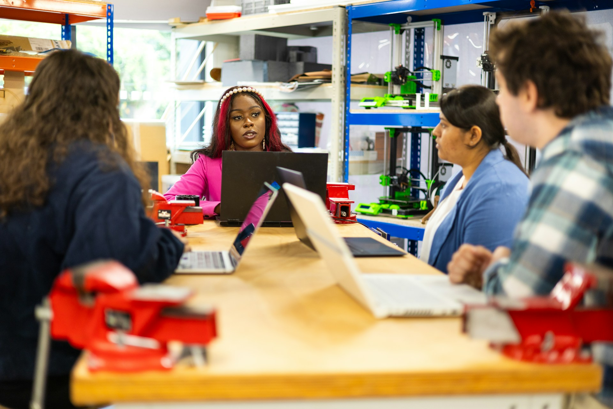

People before programs.
Resources become useful when students know who to ask, who has been there, and who wants to build beside them.
The Oberlin 3-2 Engineering Society connects students who would otherwise move through engineering interests, requirements, and decisions in separate lanes.

We bring together current and prospective 3-2 students, makers, programmers, researchers, designers, and anyone curious about engineering. The society creates relationships, preserves knowledge, opens access to resources, and gives student teams a structure for doing serious project work.
Resources become useful when students know who to ask, who has been there, and who wants to build beside them.
Early planning, honest information, and shared experience make the five-year path easier to navigate with intention.
We value tested prototypes, documented decisions, measured results, and the ability to explain what failed.
Every board should leave the organization stronger, clearer, and easier for the next group to lead.
People with similar goals may sit in physics, computer science, mathematics, chemistry, environmental studies, TIMARA, art, or economics without ever meeting.
Course choices, partner-school experience, application lessons, and internship advice can disappear when older students transition away.
Students may have skills and ambition but no team, review process, material support, documentation standard, or public deadline.
A strong student network can make the 3-2 route easier to understand without replacing official academic advising.
Oberlin's 3-2 Engineering Program combines three years of liberal-arts study, including mathematics and sciences, with two years of engineering coursework at an affiliated institution.
Mathematics, science, liberal arts, communication, exploration, and preparation for the chosen engineering direction.
Accredited engineering coursework and specialized technical development at one of the current partner schools.
The society supports peer connection and shared experience. Academic requirements, eligibility, applications, and individual plans should be confirmed through Oberlin's official program resources and advising.
A student organization should not reset every time leaders graduate or transfer. We treat governance, documentation, and handoff as design problems.
Every board, role, term, and advisor remains visible so members can understand how the organization evolved.
Briefs, teams, design decisions, test results, files, failures, and next steps stay accessible for future builders.
Each board records membership, programs, finances, partnerships, competition outcomes, and priorities for the next year.
Incoming leaders inherit calendars, contacts, templates, operating procedures, and unfinished work instead of starting from memory.
Recruit the founding board, launch the resource hub, open project teams, and establish recurring programs.
Run design reviews, strengthen partnerships, secure material support, and prepare competition teams.
Evaluate a project showcase or challenge only after teams, resources, safety, space, and partners are ready.